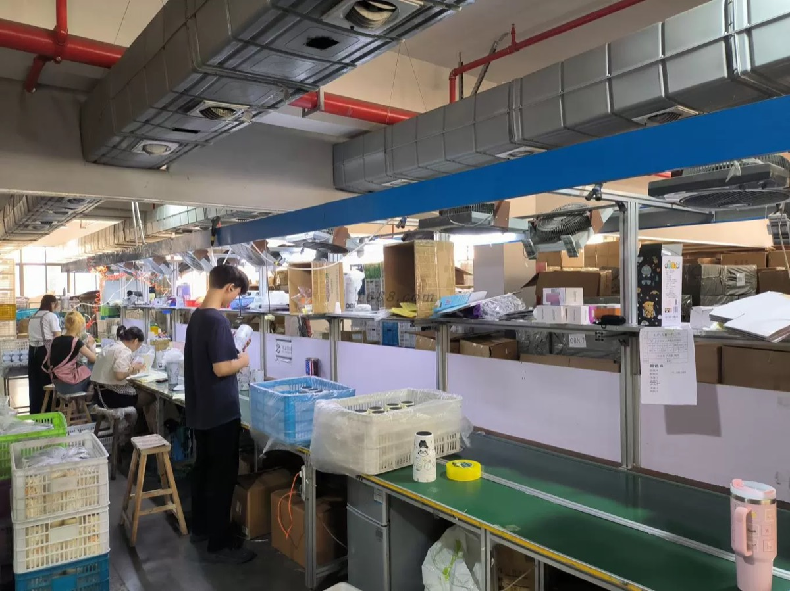
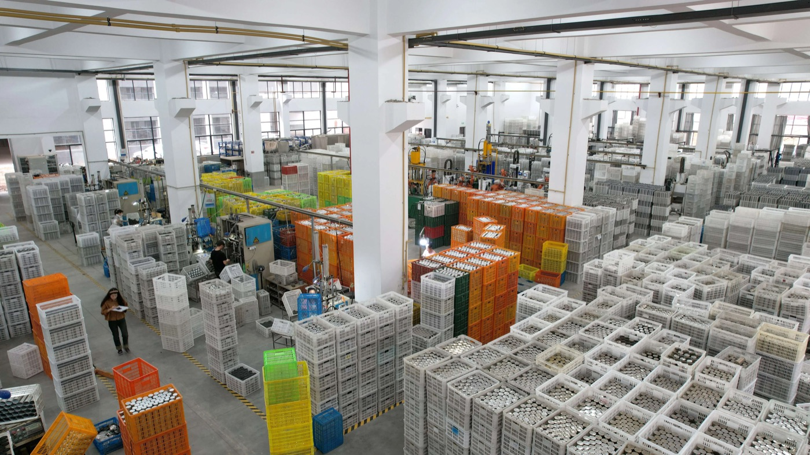
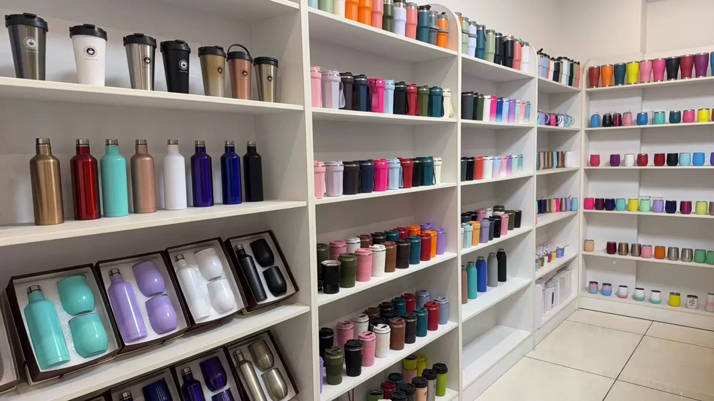

Before Production
The most important control step is confirming product reference, material, capacity, logo method, packaging and sample expectation before bulk work starts. Clear approval reduces misunderstandings later.
HDS Drinkware
Quality control for custom drinkware should cover material, appearance, logo, function, packaging, carton marks and pre-shipment review.



The most important control step is confirming product reference, material, capacity, logo method, packaging and sample expectation before bulk work starts. Clear approval reduces misunderstandings later.
Production follow-up should check color, surface finish, lid fit, logo placement, decoration effect and packaging consistency. When details are unclear, sample photos or videos should be used for buyer confirmation.
Pre-shipment review should include product appearance, quantity, carton marks, packaging condition and carton information. This helps buyers prepare marketplace, warehouse or distributor receiving work.
Quality control works best when buyers provide clear artwork, product references, packaging requirements and destination rules early. HDS can then coordinate practical checks against those agreed requirements.
Before you contact HDS
Clear product, logo, packaging and shipping information helps the team reply with a practical path instead of a generic answer.
Send your product photo, quantity, logo requirement, packaging request and target market.